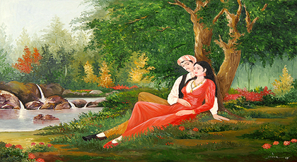

Şah İsmail ile Gülizar

Kandehar Padişahı’nın çocuğu olmaz. Buna bir çare aramak maksadıyla yanına vezirini de alıp gurbete çıkar. Yolda bir çeşme görüp mola verirler, abdest alıp namaz kılarlar. Selam verdiklerinde yanlarına bir derviş gelir. Derviş, onları tanıdığını, dertlerini de bildiğini söyler.
Sonra kendilerine bir elma verir, bunu ikiye bölmelerini, eşleriyle birlikte yemelerini, kabuğunu da ahırdaki kısrağa yedirmelerini söyler. Sonra da doğacak çocuğa ve kuluna, gelip kendisinin ad vereceğini belirterek gözden kaybolur. Dervişin dediklerini yerine getiren padişahın zamanı gelince bir oğlu, kısrağın da bir kulunu olur.
Çocuk beş yaşında okula gitmeye başlar. On beş yaşına geldiğinde hala isim verilmemiştir. Padişah artık tam isim vermek üzereyken derviş gelir, çocuğa “Şah İsmail”, kuluna da “Kamertay” ismini verir ve ortadan kaybolur. Eğitimine devam etmekte olan Şah İsmail, fırsat buldukça arkadaşlarıyla avlanmaya çıkar. Yine böyle bir av esnasında bir çeşme başında uyuyakalır. Rüyasında kırklar elinden bade içer. Şah İsmail uyandıktan sonra avına devam eder ve bu sırada Türkmen Beyi’nin kızı Gülizar ile karşılaşır, gençler birbirlerine aşık olurlar. Durumu öğrenen Kandehar Padişahı, Türkmen Beyi’ni huzuruna çağırır, Allah’ın emriyle kızını ister. Bey de kızını Şah İsmail’e verir. Bu evliliğin gerçekleşmesini istemeyen Gülizar’ın annesi, tam düğün hazırlıkları başladığı sırada kızını da yanına alarak Hindistan’a göç eder. Ancak Gülizar geride bir mektup bırakarak gittikleri yeri bildirir. Bunun üzerine Şah İsmail sevdiğinin peşine düşer.
Yolculuğu esnasında kapısız bacasız bir sarayla karşılaşan Şah İsmail, bir gürz darbesiyle kaleyi yıkıp içeri girer. İçeride Gülperi adında bir kız vardır ve bu kız yedi kardeşinin devlerle savaştığını, üçünün şehit olduğunu Şah İsmail’e anlatır. Şah İsmail, Gülperi’nin kardeşlerine yardım eder ve devleri mağlup ederler. Ancak kardeşler geri döndüklerinde kalenin yıkıldığını görüp Gülperi’nin namuslarına leke sürdüğünü düşünerek onu öldürmek isterler. Kız başından geçenleri anlatınca bu defa Şah İsmail’le Gülperi’yi evlendirmek isterler. Şah İsmail, Gülizar’ı bulmadan Gülperi ile evlenemeyeceğini söyler, düğün ertelenir ve Şah İsmail tekrar yola koyulur. Yolculuğu esnasında bu kez Arap Üzengi ile karşılaşır. Arap Üzengi, savaştığı ve mağlup ettiği yüzlerce insanın kafataslarından bir kale yapmıştır. Kalenin tamamlanması için sadece bir başa ihtiyaç vardır ve onu da Şah İsmail’in başıyla tamamlamak ister. Kavgaya tutuşurlar ve Şah İsmail, Arap Üzengi’yi yener. Tam öldüreceği sırada yüzündeki örtüyü açar ve Arap Üzengi’nin aslında dünya güzeli bir kız olduğunu görür. Arap Üzengi kendisini yenen genç ile evleneceğini söyler. Ancak Şah İsmail, Gülizar’ı bulmadan bunun olamayacağını söyler. Gülizar’ı bulmak üzere birlikte yola çıkan ikili Hindistan’a varırlar, burada yaşlı bir kadına misafir olurlar. Yaşlı kadın onlara, Hint Padişahı’nın Gülizar’ı oğluyla evlendirdiğini, ancak Gülizar’ın kırk günlük yasını bahane ederek gerdeğe girmediğini anlatır. Şah İsmail de Gülizar’ın daha önceden kendisine hediye ettiği tarağı yaşlı kadına vererek onu Gülizar’a gönderir. Tarağı tanıyan Gülizar, Şah İsmail’e haber göndererek kendisini kaçırmasını ister. Bunun üzerine Şah İsmail, Arap Üzengi’yle bir olup Gülizar’ı kaçırır. Hep birlikte Kandehar’a doğru yola düşerler. Şah İsmail yolculuk sırasında Gülperi’yi de yanına alır.
Kandehar’a vardıklarında Şah İsmail’in annesi gelinleri görünce kıskanır. Kocasının aklına fitne sokar ve oğlunu öldürüp kızlarla kendisinin evlenmesini padişaha söyler. Padişah da oğlunu yakalatıp öldürecekken onun yalvarmalarına dayanamaz ve gözüne mil çektirip dağa terk eder. Şah İsmail dönmeyince durumdan şüphelenen Arap Üzengi, padişahın kendilerini saraya getirmesi için gönderdiği doksan dokuz kadının başını keser. Padişah da onun üzerine bir ordu gönderir, Arap Üzengi orduyla savaşmaya başlar.
Bu sırada güvercinlerin yardımıyla tekrar görmeye başlayan Şah İsmail, babasının huzuruna çıkar ve Arap Üzengi’yle savaşacağını söyler. Ancak savaş meydanında Şah İsmail ile Arap Üzengi güçlerini birleştirirler ve padişahın ordusuyla savaşıp galip gelirler. Arap Üzengi, padişahı öldürür, Şah İsmail de tahta çıkar. Üç kıza kırk gün kırk gece düğün yapılır ve böylece sevenler muradına erer.